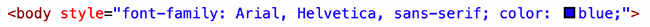
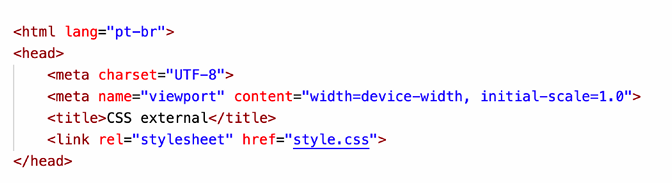

Nós já falamos sobre folhas de estilo em cascata, as famosas CSS no capítulo 3. Se por acaso você não se lembra direito, vale a pena voltar lá e dar uma segunda olhada nas definições. Vou considerar que você lembra claramente o que são as Cascading Style Sheets para podermos prosseguir.
Vamos começar nos focando na tag
e aplicando um estilo diferente ao corpo da página. Adicione o parâmetro style e digite as duas declarações de font-family e color, conforme apresentado a seguir: Note que o formato da letra mudou (era Times e ficou em Arial) e a cor da fonte também foi alterado para azul. Se por acaso alguma dessas duas alterações não funcionou corretamente com você, confira seu código, pois algo foi digitado incorretamente. Lembre-se que o computador não é tão inteligente quanto você pode pensar. Temos que dar ordens bem claras e seguindo sempre as regras para que ele nos obedeça.
CUIDADO! Se por acaso você aprendeu em algum momento a tag <font color=“blue”> e acha muito mais prática usá-la, saiba que ela NÃO É MAIS ACEITA para as especificações da HTML5!
Vamos fazer mais uma alteração, dessa vez na linha do primeiro título <h1> do nosso código:
Note que apenas o Capítulo 1 ficou vermelho, o Capítulo 2 - que também é um <h1> - não teve alteração alguma. Isso acontece pois estamos fazendo configurações pontuais usando CSS. Para ver o resultado do código gerado, clique aqui
Para aplicar estilos de forma mais dinâmica e prática, podemos adicionar uma tag <style> dentro da área <head> do nosso documento HTML local. Volte lá no seu VSCode, e adicione o código dentro de <head>. Para acessar o código, clique aqui
ATENÇÃO! A tag <style> deve estar dentro da área <head> do seu documento HTML5. Se você colocá-la em qualquer outro local, como dentro da tag <body>, o resultado até pode funcionar, mas seu código estará fora dos padrões estabelecidos pela W3C. Siga sempre as regras!
Manter as folhas de estilo fora do código HTML, além de uma maior organização faz com que tudo seja reaproveitado de maneira mais eficiente nas outras páginas do nosso site. Para isso, utilizamos a tag <link> especialmente configurada para trabalhar com arquivos externos de estilo. Essa tag deve ser colocada dentro da área <head> do seu documento HTML.
A linha com o <link> pode estar em qualquer linha, contanto que seja dentro da área <head>. Particularmente, sempre procuro adicionar essa configuração após a tag <title> do documento atual. Clique aqui
De forma resumida, guarde isso na sua cabeça:
Ainda é possível misturar as três técnicas, criando um CSS externo para as configurações globais, CSS interno para as configurações locais de um documento e CSS inline para pequenas configurações pontuais.
Para especificar tamanho de fontes, existem várias medidas como cm (centímetros), in (polegadas), pt (pontos), pc (paicas), px (pixels), etc. Para tamanhos de fonte a serem exibidos na tela, o W3C recomenda o uso do px ou do em.
EU GOSTO DE USAR PT, MAS: A medida pt é aquela usada em editores de texto como o Microsoft Word. A recomendação oficial é de usar pt apenas para referenciar conteúdos que serão impressos.
A medida em é uma das que gera mais dúvida nos alunos. Ela é uma medida referencial em relação ao tamanho original da fonte. O tamanho padrão de uma fonte é geralmente 16px, isso equivale a 1em. A partir daí, podemos configurar o tamanho de um título, por exemplo, como sendo 2 vezes maior que a fonte padrão usando o valor 2em para a propriedade.